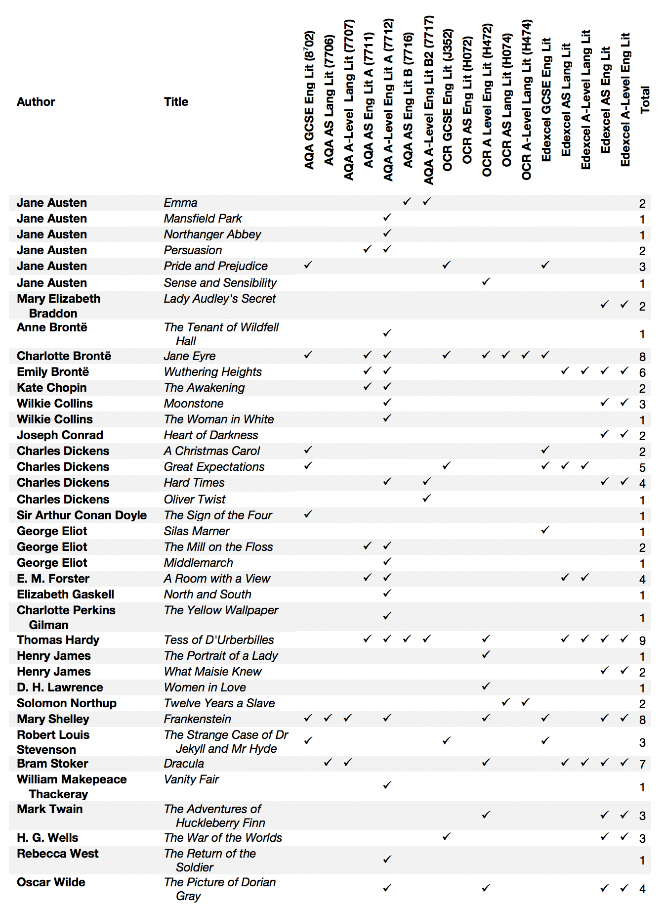

Appendices¶
The appendices only act as an overview. For up-to-date information and the documentation of how the corpus texts were cleaned, please refer to the README in the [GitHub_corpora] repository. You can also create a dynamic list of the books in the corpora (and their word counts) using the Counts tab.
Texts in CLiC
Title |
Author |
|---|---|
A Tale of Two Cities |
Charles Dickens |
Barnaby Rudge |
Charles Dickens |
Bleak House |
Charles Dickens |
David Copperfield |
Charles Dickens |
Dombey and Son |
Charles Dickens |
Great Expectations |
Charles Dickens |
Hard Times |
Charles Dickens |
Little Dorrit |
Charles Dickens |
Martin Chuzzlewit |
Charles Dickens |
Nicholas Nickleby |
Charles Dickens |
Oliver Twist |
Charles Dickens |
Our Mutual Friend |
Charles Dickens |
Pickwick Papers |
Charles Dickens |
The Mystery of Edwin Drood |
Charles Dickens |
The Old Curiosity Shop |
Charles Dickens |
Title |
Author |
|---|---|
Agnes Grey |
Anne Brontë |
Antonina or, the Fall of Rome |
Wilkie Collins |
Armadale |
Wilkie Collins |
Cranford |
Elizabeth Gaskell |
Daniel Deronda |
George Eliot |
Dracula |
Bram Stoker |
Emma |
Jane Austen |
Frankenstein |
Mary Shelley |
Jane Eyre |
Charlotte Brontë |
Jude the Obscure |
Thomas Hardy |
Lady Audley’s Secret |
Mary Elizabeth Braddon |
Mary Barton |
Elizabeth Gaskell |
North and South |
Elizabeth Gaskell |
Persuasion |
Jane Austen |
Pride and Prejudice |
Jane Austen |
Sybil, or the two nations |
Benjamin Disraeli |
Tess of the D’Urbervilles |
Thomas Hardy |
The Hound of the Baskervilles |
Arthur Conan Doyle |
The Last Days of Pompeii |
Edward George Bulwer-Lytton |
The Mill on the Floss |
George Eliot |
The Picture of Dorian Gray |
Oscar Wilde |
The Professor |
Charlotte Brontë |
The Return of the Native |
Thomas Hardy |
The Small House at Allington |
Anthony Trollope |
The Strange Case of Dr Jekyll and Mr Hyde |
Robert Louis Stevenson |
The Woman in White |
Wilkie Collins |
Vanity Fair |
William Makepeace Thackeray |
Vivian Grey |
Benjamin Disraeli |
Wuthering Heights |
Emily Brontë |
Title |
Author |
|---|---|
A World of Girls: The Story of a School |
|
Adventures in Wallypug-Land |
|
Alice’s Adventures in Wonderland |
Lewis Carroll |
Allan Quatermain |
|
Alone in London |
Hesba Stretton |
At the Back of the North Wind |
George McDonald |
Black Beauty |
Anna Sewell |
Dream Days |
Kenneth Grahame |
Eric; Or, Little by Little |
|
Feats on the Fiord |
Harriet Martineau |
Five Children and It |
|
Holiday House: A Series of Tales |
Catherine Sinclair |
Jackanapes |
Juliana Horatia Ewing |
Jessica’s First Prayer |
Hesba Stretton |
Kidnapped |
Robert Louis Stevenson |
King Solomon’s Mines |
|
Leila at home |
Ann Fraser Tytler |
Little Meg’s children |
Hesba Stretton |
Madam How and Lady Why; Or, First Lessons in Earth Lore for Children |
Charles Kingsley |
Masterman Ready; Or, The Wreck of the Pacific |
Frederick Marryat |
Moonfleet |
|
Mopsa the Fairy |
Jean Ingelow |
Mrs. Overtheway’s Remembrances |
Juliana Horatia Ewing |
Nine Unlikely Tales |
|
Peter Pan |
|
Prince Prigio |
Andrew Lang |
Stalky and Co |
Rudyard Kipling |
The Book of Dragons |
|
The Brass Bottle |
|
The Carved Lions |
Mary Louisa Molesworth |
The Children of the New Forest |
Frederick Marryat |
The Coral Island: A Tale of the Pacific Ocean |
|
The Crofton Boys |
Harriet Martineau |
The Cuckoo Clock |
Mary Louisa Molesworth |
The Daisy Chain, or Aspirations |
Charlotte M. Yonge |
The Dove in the Eagle’s Nest |
Charlotte M. Yonge |
The Fifth Form at Saint Dominic’s: A School Story |
Talbot Baines Reed |
The Golden Age |
Kenneth Grahame |
The Happy Prince, and Other Tales |
Oscar Wilde |
The Heir of Redclyffe |
Charlotte M. Yonge |
The Jungle Book |
Rudyard Kipling |
The King of the Golden River; or, the Black Brothers: A Legend of Stiria |
John Ruskin |
The Little Duke: Richard the Fearless |
Charlotte M. Yonge |
The Peasant and the Prince |
Harriet Martineau |
The Princess and the Goblin |
George McDonald |
The Railway Children |
|
The Rival Crusoes; or The Shipwreck |
Agnes Strickland |
The Rose and the Ring |
William Makepeace Thackeray |
The Secret Garden |
Frances Hodgson Burnett |
The Settlers at Home |
Harriet Martineau |
The Settlers in Canada |
Frederick Marryat |
The Story of the Amulet |
|
The Story of the Treasure Seekers |
|
The Surprising Adventures of Sir Toady Lion |
S.R. Crockett |
The Tale of Benjamin Bunny |
Beatrix Potter |
The Tale of Jemima Puddle-Duck |
Beatrix Potter |
The Tale of Peter Rabbit |
Beatrix Potter |
The Tale of Squirrel Nutkin |
Beatrix Potter |
The Tale of the Flopsy Bunnies |
Beatrix Potter |
The Tale of Two Bad Mice |
Beatrix Potter |
The Tapestry Room: A Child’s Romance |
Mary Louisa Molesworth |
The Three Mulla-mulgars |
Walter de la Mare |
The Water-Babies |
Charles Kingsley |
The Wind in the Willows |
Kenneth Grahame |
Through the Looking-Glass |
Lewis Carroll |
Tom Brown’s Schooldays |
Thomas Hughes |
Treasure Island |
Robert Louis Stevenson |
Vice Versa; or, A Lesson to Fathers |
|
Winning His Spurs. A Tale of the Crusades |
|
With Clive in India; Or, The Beginnings of an Empire |
|
Wood Magic, a Fable |
Richard Jefferies |
Title |
Author |
|---|---|
A Christmas Carol: A Ghost Story of Christmas |
Charles Dickens |
A Room with a View |
|
Adventures of Huckleberry Finn, Complete |
Mark Twain |
American Notes for General Circulation |
Charles Dickens |
Gulliver’s Travels |
Jonathan Swift |
Heart of Darkness |
Joseph Conrad |
Lady Susan |
Jane Austen |
Mansfield Park |
Jane Austen |
Middlemarch |
George Eliot |
Northanger Abbey |
Jane Austen |
Pictures from Italy |
Charles Dickens |
Sense and Sensibility |
Jane Austen |
Shirley |
Charlotte Brontë |
Silas Marner: The Weaver of Raveloe |
George Eliot |
Sketches by Boz: Illustrative of Every-Day Life and Every-Day People |
Charles Dickens |
The Awakening and Selected Short Stories |
Kate Chopin |
The Jungle |
Upton Sinclair |
The Moonstone |
Wilkie Collins |
The Portrait of a Lady Volume 1 (of 2) |
Henry James |
The Portrait of a Lady Volume 2 (of 2) |
Henry James |
The Return of the Soldier |
Rebecca West |
The Sign of the Four |
Arthur Conan Doyle |
The Tenant of Wildfell Hall |
Anne Brontë |
The Time Machine: An Invention |
|
The Uncommercial Traveller |
Charles Dickens |
The War of the Worlds |
|
The Yellow Wallpaper |
Charlotte Perkins Gilman |
Twelve Years a Slave |
Solomon Northup |
Villette |
Charlotte Brontë |
What Maisie Knew |
Henry James |
Women in Love |
|
Title |
Author |
Year |
|---|---|---|
Die Günderode |
Arnim, B. |
1840 |
Clemens Brentanos Frühlingskranz |
Arnim, B. |
1844 |
Fanny Förster |
Boy-Ed, I. |
1889 |
Kampf um Rom |
Dahn, F. |
1876 |
Sibilla Dalmar |
Dohm, H. |
1896 |
Schicksale einer Seele |
Dohm, H. |
1899 |
Bozena |
Ebner-Eschenbach, M. |
1876 |
Vor dem Sturm |
Fontane, T. |
1878 |
Der Stechlin |
Fontane, T. |
1897/98 |
Die letzte Reckenburgerin |
François, Louise. |
1871 |
Soll und Haben |
Freytag, G. |
1855 |
Die verlorene Handschrift |
Freytag, G. |
1864 |
Schloß Hubertus |
Ganghofer, L. |
1895 |
Sibylle |
Hahn-Hahn, I. G. |
1846 |
Der Sonnenwirt |
Kurz, H. |
1855 |
Jenny |
Lewald, F. |
1843 |
Das Heideprinzeßchen |
Marlitt, E. |
1871/72 |
Goldelse |
Marlitt, E. |
1866/67 |
Das Geheimnis der alten Mamsell |
Marlitt, E. |
1868 |
Am Jenseits |
May, K. |
1898 |
Jürg Jenatsch |
Meyer, C. F. |
1874 |
Der Büttnerbauer |
Polenz, W. |
1895 |
Der Schüdderump |
Raabe, W. |
1869/70 |
Der Hungerpastor |
Raabe, W. |
1863/64 |
Die Leute aus dem Walde, ihre Sterne, Wege und Schicksale |
Raabe, W. |
1863 |
Anna |
Schopenhauer, A. |
1845 |
Problematische Naturen. Erste Abtheilung |
Spielhagen, F. |
1861 |
Hammer und Amboß |
Spielhagen, F. |
1869 |
Die Mappe meines Urgroßvaters |
Stifter, A. |
1841 |
Witiko |
Stifter, A. |
1855, 1865–1867 |
Vittoria Accorombona |
Tieck, L. |
1840 |
Auch Einer 1 |
Vischer, F. T. |
1879 |
Auch Einer 2 |
Vischer, F. T. |
1879 |
CLiC texts listed in A-Level and GCSE specifications

Fig. 46 Overview of CLiC texts listed in the AQA, Edexcel and OCR A-Level / GCSE specifications¶